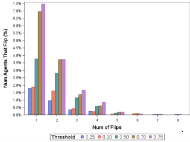
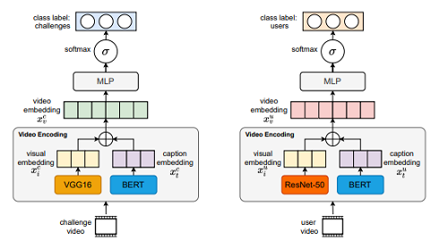
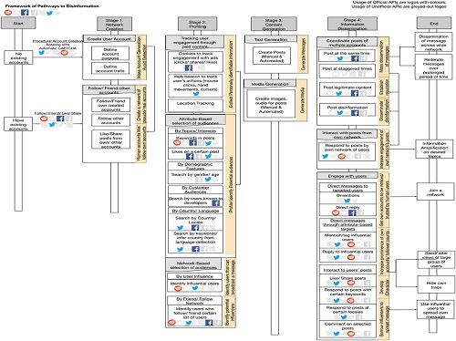
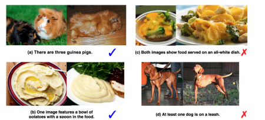

Semester 2 has been slightly easier on me, having settled into Pittsburgh and school life a little. We were starting to have in-person lessons again and it was amazing seeing my advisor, professors and labmates! It wasn't all rosy though; many in-person plans were distrupted because someone had contracted COVID or someone was a close contact. That said, I'm loving the pandemic for one thing: we've figured out virtual talks, meetings and conferences, which means I can attend a lot of talks without needing to fly over!
Here's some of the work that I've accomplished this semester.
Stabilizing a supervised bot detection algorithm: How much data is needed for consistent predictions?

Many social media bot detectors have been developed, and they all rely on a threshold. If a user agent has a bot-probability score above the threshold, it is considered a bot; if below, it is considered a non-bot. But what threshold should we use? How much data do we need?
A stable bot score is one that changes minimally across an investigation time frame, thus providing reliable characterization of an account - or agent’s - bot classification. A stable bot detection algorithm is one that consistently characterizes an agent as a bot or non-bot.
We performed a systematic evaluation of the BotHunter algorithm across increasing number of days and increasing number of tweets. For this algorithm, to achieve bot prediction algorithm stability, a recommended threshold level is 0.70. A recommended collection size is at least 10 days of tweets or 20 tweets.
Give it a read here and hopefully you'll learn more about stabalizing threshold-based algorithms.

Because we are spending too much time on the new amazing platform TikTok, we did a study on hashtag challenges and what makes them viral. We developed a deep learning model that maps out user's past videos and challenges past videos to predict whether a user will participate in the challenge. Read about this fun piece on social contagion and TikTok challenges which was accepted in ASONAM.
Many thanks to Roy Lee who kept this flame alive and kept on improving the work. It finally paid off and got accepted!
We also got a magazine feature for this piece!

A piece where we mapped out a framework for pathways of disinformation with Araz Taeihagh finally came out in Policy and Internet.
We did a systematic literature review on APIs (application programming interfaces) that social media platforms provide and the spread of disinformation. Then we examined open-source code repositories to understand the usage patterns of these APIs.
We categorized the use of APIs into a four stage framework that characterises the spread of disinformation on social media platforms. The stages are: Network Creation, Profiling, Content Generation and Information Dissemination.
We showed how this framework can be applied in the 2016 US Presidential Election, where Russia's Internet Research Agency attempted to sow discord among the voting population.
Finally, we provided policy recommendations for regulation of social media APIs for social media platforms, governments and organizations.
This was a great characterization and survey exercise and I hope it will elucidate mechanisms of information spreading on social media platforms.

As part of class project, we did came up with CIGLI: Conditional Image Generation from Language & Image, which was accepted at
ICCV Workshop on closing the loop in vision and image.
In this paper, we designed a dataset based off the NLVR image-language task.
We construct a task where a vision-language model is presented with one image and a text description describing two images. The model has to generate the second image to fulfil the description, but solely analyzing the description is insufficient to generate an image; the model has to look at both the first image and the text description. To do this, we propose an image-language fusion model and evaluated it through quantitative (automatic) and qualitative (human) evaluations. The code and dataset is available here, do take a look and come up with new ideas!
Co-authors: Xiaopeng Lu, Jared Fernandez, Hao Zhu
Along with all these came an unexpected acceptance at AAAI Student Poster abstract on Graph-Aware Reinforcement Learning to Identify Winning Strategies in Diplomacy Games. This paper made it to the finalist, which is the top 10% of the papers. So proud of the first author, Hansin Ahuja, an undergraduate at IIT. Also thanks to mentor Kokil Jaidka for keeping up with this!